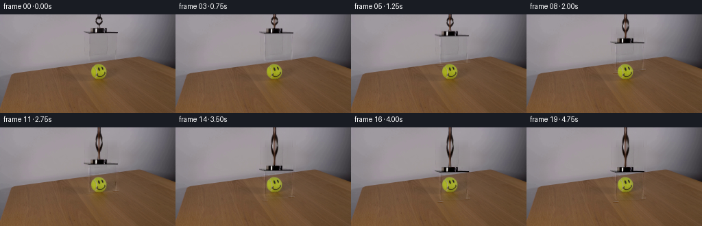
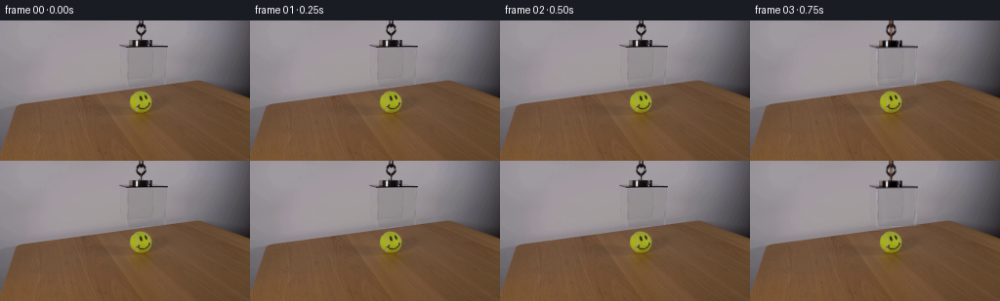

CODING AGENTS AS PIXEL WORLD MODELS
traex/GPT-5.6-Sol · 0097
点击播放 · 原生 RGB 像素
逐轮保存的候选
回放视频、检查图与代码变化。
每份候选均可单独播放。实际图片检查记录在下方工具轨迹中。
候选 01播放与检查图
点击播放 · 原生 RGB 像素


展开代码变化
--- 上一保存版本
+++ 本次保存版本
@@ -0,0 +1,200 @@
+from pathlib import Path
+import cv2
+import numpy as np
+from PIL import Image
+import artifact_io
+
+# PixelWorld case 0097: photographic plate animation using only local RGB operations.
+CASE_DIR = Path(__file__).resolve().parent
+SRC = np.asarray(Image.open(CASE_DIR / "first_frame.png").convert("RGB"), dtype=np.uint8)
+H, W = SRC.shape[:2]
+
+
+def horizontal_fill(im, x0, x1, y0, y1, sample=4):
+ """Remove a narrow object against this scene's smooth backdrop by row interpolation."""
+ out = im.copy().astype(np.float32)
+ x0, x1 = max(1, x0), min(W - 2, x1)
+ y0, y1 = max(0, y0), min(H, y1)
+ left = im[y0:y1, max(0, x0-sample):x0].astype(np.float32).mean(axis=1)
+ right = im[y0:y1, x1:min(W, x1+sample)].astype(np.float32).mean(axis=1)
+ if left.ndim == 1: left = left[:, None]
+ if right.ndim == 1: right = right[:, None]
+ for x in range(x0, x1):
+ q = (x - x0 + 1.0) / (x1 - x0 + 1.0)
+ out[y0:y1, x] = left * (1-q) + right * q
+ return np.clip(out, 0, 255).astype(np.uint8)
+
+
+def vertical_fill(im, x0, x1, y0, y1, sample=3):
+ out = im.copy().astype(np.float32)
+ x0, x1 = max(0, x0), min(W, x1)
+ y0, y1 = max(1, y0), min(H-1, y1)
+ top = im[max(0,y0-sample):y0, x0:x1].astype(np.float32).mean(axis=0)
+ bot = im[y1:min(H,y1+sample), x0:x1].astype(np.float32).mean(axis=0)
+ for y in range(y0, y1):
+ q = (y-y0+1.0)/(y1-y0+1.0)
+ out[y, x0:x1] = top*(1-q)+bot*q
+ return np.clip(out,0,255).astype(np.uint8)
+
+
+# Make a clean photographic plate. Regions are deliberately narrow: the ball and table
+# grain remain original and absolutely stationary.
+CLEAN = SRC.copy()
+CLEAN = horizontal_fill(CLEAN, 135, 153, 0, 19, 5) # original hanging cord
+CLEAN = vertical_fill(CLEAN, 118, 176, 18, 30, 4) # knot/fastener and upper rim
+CLEAN = horizontal_fill(CLEAN, 126, 135, 29, 72, 5) # left acrylic edge
+CLEAN = horizontal_fill(CLEAN, 164, 174, 29, 69, 5) # right acrylic edge
+
+# Feathered mask of pixels belonging to the movable photographed rig. Additive residuals
+# preserve its real texture while allowing the transparent object to cross new background.
+obj = np.zeros((H,W), np.uint8)
+cv2.rectangle(obj, (135,0), (152,19), 255, -1)
+cv2.rectangle(obj, (118,18), (175,30), 255, -1)
+cv2.rectangle(obj, (125,25), (135,72), 255, -1)
+cv2.rectangle(obj, (164,25), (174,69), 255, -1)
+obj = cv2.GaussianBlur(obj, (3,3), .45).astype(np.float32)/255.0
+residual = (SRC.astype(np.float32)-CLEAN.astype(np.float32))*obj[...,None]
+
+# Split the upper cord from the descending fastener/box. The cord remains attached to the
+# top of the locked frame and lengthens; everything from y=18 downward translates.
+cord_mask = np.zeros((H,W), np.float32)
+cord_mask[:20,133:155] = 1.0
+cord_mask = cv2.GaussianBlur(cord_mask,(3,3),.45)
+cord_res = residual * cord_mask[...,None]
+body_res = residual * (1.0-cord_mask[...,None])
+
+
+def shift_float(arr, dy):
+ M = np.float32([[1,0,0],[0,1,float(dy)]])
+ return cv2.warpAffine(arr, M, (W,H), flags=cv2.INTER_LINEAR,
+ borderMode=cv2.BORDER_CONSTANT, borderValue=0)
+
+
+def stretched_cord(dy):
+ """Vertically extend the photographed cord residual from the ceiling to the moving clip."""
+ out = np.zeros_like(residual)
+ target_h = max(20, int(round(20+dy)))
+ crop = cord_res[:20,132:156]
+ ext = cv2.resize(crop, (24,target_h), interpolation=cv2.INTER_LINEAR)
+ out[:min(H,target_h),132:156] = ext[:min(H,target_h)]
+ return out
+
+
+def aa_mask(lines=(), polys=(), ellipses=(), scale=4):
+ m=np.zeros((H*scale,W*scale),np.uint8)
+ for pts,thick,val in lines:
+ p=np.rint(np.asarray(pts)*scale).astype(np.int32)
+ cv2.polylines(m,[p],False,int(val),max(1,int(round(thick*scale))),cv2.LINE_AA)
+ for pts,val in polys:
+ p=np.rint(np.asarray(pts)*scale).astype(np.int32)
+ cv2.fillPoly(m,[p],int(val),cv2.LINE_AA)
+ for center,axes,angle,val in ellipses:
+ c=tuple(np.rint(np.asarray(center)*scale).astype(int)); a=tuple(np.rint(np.asarray(axes)*scale).astype(int))
+ cv2.ellipse(m,c,a,angle,0,360,int(val),-1,cv2.LINE_AA)
+ return cv2.resize(m,(W,H),interpolation=cv2.INTER_AREA).astype(np.float32)/255.0
+
+
+def blend_color(frame, mask, color, opacity=1.0):
+ a=np.clip(mask*opacity,0,1)[...,None]
+ return frame*(1-a)+np.asarray(color,np.float32)[None,None,:]*a
+
+
+def add_delta(frame, mask, delta):
+ return frame + mask[...,None]*np.asarray(delta,np.float32)[None,None,:]
+
+
+def smoothstep(x):
+ x=np.clip(x,0.0,1.0)
+ return x*x*(3.0-2.0*x)
+
+
+def render(index):
+ # 0.5 s hold, a controlled 3.5 s descent, then a one-second settled view.
+ if index <= 2:
+ progress = 0.0
+ elif index >= 16:
+ progress = 1.0
+ else:
+ progress = smoothstep((index-2)/14.0)
+ dy = 38.0*progress
+
+ # Frame zero is contractually exact; keeping the brief opening hold exact also conveys
+ # that this is a real-time demonstration rather than an immediate jump cut.
+ if progress == 0.0:
+ return SRC.copy()
+
+ f=CLEAN.astype(np.float32)
+
+ # Faint moving shadow/contact cue, strongest when the cover approaches the tabletop.
+ near=smoothstep((dy-22.0)/16.0)
+ shadow=aa_mask(
+ lines=[([(129,67+dy),(171,67+dy)],2.2,160)],
+ ellipses=[((150,101),(27,3.2),-3,85)]
+ )
+ f=add_delta(f,shadow*near,(-9,-8,-6))
+
+ # Front clear acrylic pane. It is nearly colorless: minute cooling, reduced contrast,
+ # and broad vertical reflections are enough to register it without hiding the smiley.
+ top=27.0+dy; bottom=67.0+dy
+ pane=aa_mask(polys=[([(130,top),(170,top),(170,bottom),(130,bottom)],255)])
+ # Transparent acrylic slightly lifts darks and cools the scene.
+ lum=(0.299*f[...,0]+0.587*f[...,1]+0.114*f[...,2])[...,None]
+ neutral=np.repeat(lum,3,axis=2)
+ pa=(0.025+0.014*near)*pane[...,None]
+ f=f*(1-pa)+neutral*pa
+ f=add_delta(f,pane,(1.0,1.8,2.5))
+
+ # Soft, physically plausible reflection bands on the front sheet.
+ band1=aa_mask(polys=[([(133,top+2),(137,top+2),(141,bottom-2),(136,bottom-2)],150)])
+ band2=aa_mask(polys=[([(161,top+1),(164,top+1),(162,bottom-1),(159,bottom-1)],90)])
+ f=add_delta(f,band1,(3.8,4.2,4.8))
+ f=add_delta(f,band2,(2.2,2.7,3.4))
+
+ # Translate the photographed acrylic edges, clip, and dark fixture. During motion a tiny
+ # trailing exposure supplies camera-realistic motion softness at 4 fps.
+ moved=shift_float(body_res,dy)
+ if 0.0 < progress < 1.0:
+ moved=.82*moved+.18*shift_float(body_res,max(0,dy-0.75))
+ f += moved
+ f += stretched_cord(dy)
+
+ # Reinforce the orange suspension cord only where it has newly extended. Warm dark core,
+ # fine orange highlight, and subtle lateral sway from the lowering mechanism.
+ sway=0.35*np.sin(progress*np.pi)
+ rope=aa_mask(lines=[([(144.5,0),(144.2+sway,18+dy)],2.15,210)])
+ rope_hi=aa_mask(lines=[([(143.8,0),(143.7+sway,18+dy)],0.55,180)])
+ # Limit mostly to central cord; photographed knot/body stays on top via the residual.
+ f=blend_color(f,rope,(67,34,20),.55)
+ f=blend_color(f,rope_hi,(178,91,35),.46)
+ f += shift_float(body_res,dy)*0.10 # restore crisp fixture details above the cord stroke
+
+ # Acrylic perimeter: mixed bright/dark double edges and an open lower rim. These remain
+ # restrained because the original photographic residual supplies most of the texture.
+ bright=aa_mask(lines=[
+ ([(130.2,top),(169.7,top)],.62,180),
+ ([(130.0,top),(130.0,bottom)],.55,165),
+ ([(169.8,top),(169.8,bottom)],.60,190),
+ ([(130.0,bottom),(169.8,bottom)],.65,160),
+ ])
+ dark=aa_mask(lines=[
+ ([(131.0,top+1),(131.0,bottom-.5)],.48,125),
+ ([(168.9,top+1),(168.9,bottom-.4)],.42,100),
+ ([(130.5,bottom+0.7),(169.5,bottom+0.7)],.42,90),
+ ])
+ f=add_delta(f,bright,(13,14,15))
+ f=add_delta(f,dark,(-8,-7,-6))
+
+ # Specular pinpoints travel down the edges as the sheet passes the studio lights.
+ glint=aa_mask(lines=[
+ ([(129.7,top+5),(129.7,min(bottom-2,top+13))],.75,170),
+ ([(170.1,max(top+2,bottom-13)),(170.1,bottom-5)],.65,145),
+ ])
+ f=add_delta(f,glint,(18,18,18))
+
+ return np.clip(np.rint(f),0,255).astype(np.uint8)
+
+
+frames=np.stack([render(i) for i in range(20)],axis=0)
+# Absolute contract guarantee independent of all subsequent image math.
+frames[0]=SRC
+artifact_io.save(frames, CASE_DIR)
可观测工具轨迹
实际执行的命令与返回图片。
命令 1exit 0
/bin/bash -lc "cat GENERATION_RULES.md && printf '\\n--- PROMPT ---\\n' && cat prompt.txt"
命令 2exit 1
/bin/bash -lc "find . -maxdepth 2 -type f -printf '%p\\n' | sort && printf '\\n--- tools ---\\n' && command -v ffmpeg && command -v python3"
命令 3exit 0
/bin/bash -lc "python3 - <<'PY'
from PIL import Image
import numpy as np
im=Image.open('first_frame.png').convert('RGB')
a=np.array(im)
print('size', im.size, 'shape',a.shape,'dtype',a.dtype)
print('channel min max mean std')
for i,c in enumerate('RGB'):
print(c,a[...,i].min(),a[...,i].max(),a[...,i].mean(),a[...,i].std())
# luminance quartiles and edge rough stats
y=np.dot(a[...,:3],[.299,.587,.114])
print('lum percentiles',np.percentile(y,[0,1,5,10,25,50,75,90,95,99,100]))
PY"命令 4exit 0
/bin/bash -lc 'cat artifact_io.py'
命令 5exit 0
/bin/bash -lc "python3 - <<'PY' mods=['cv2','PIL','numpy','scipy','skimage','imageio'] for m in mods: try: z=__import__(m); print(m,'ok',getattr(z,'__version__','')) except Exception as e: print(m,'NO',e) PY command -v ffmpeg || true command -v convert || true"
命令 6exit 0
/bin/bash -lc "python3 - <<'PY'
import cv2, numpy as np
im=cv2.imread('first_frame.png')
h,w=im.shape[:2]
# summarize 12x8 blocks RGB mean
rgb=im[:,:,::-1]
for yy in range(0,h,18):
print('ROW',yy)
print(' '.join('%02x%02x%02x'%tuple(rgb[yy:yy+18,x:x+16].mean((0,1)).astype(int)) for x in range(0,w,16)))
# kmeans colors
p=rgb.reshape(-1,3).astype(np.float32)
crit=(cv2.TERM_CRITERIA_EPS+cv2.TERM_CRITERIA_MAX_ITER,100,.2)
_,lab,c=cv2.kmeans(p,12,None,crit,10,cv2.KMEANS_PP_CENTERS)
counts=np.bincount(lab.ravel())
for n,i in sorted(zip(counts,range(12)),reverse=True): print(n, np.rint(c[i]).astype(int))
PY"命令 7exit 0
/bin/bash -lc "python3 - <<'PY'
import cv2,numpy as np
im=cv2.imread('first_frame.png'); hsv=cv2.cvtColor(im,cv2.COLOR_BGR2HSV); H,S,V=cv2.split(hsv)
# candidate masks
masks={'yellowgreen':((H>=20)&(H<=50)&(S>90)&(V>80)), 'orange':((H>=5)&(H<=22)&(S>70)&(V>70)), 'dark':V<55, 'bright':V>205, 'sat':S>100}
for name,m in masks.items():
n,lab,st,cent=cv2.connectedComponentsWithStats(m.astype('uint8'),8)
print('\\n',name,'pixels',m.sum(),'bbox all', (np.where(m)[1].min(),np.where(m)[0].min(),np.where(m)[1].max(),np.where(m)[0].max()) if m.any() else None)
ids=np.argsort(st[1:,4])[::-1][:15]+1
for i in ids:
x,y,w,h,a=st[i];
if a>=2: print(a,(x,y,w,h),tuple(np.round(cent[i],1)))
# Per-row ranges of yellowgreen
m=masks['yellowgreen']
print('\\nyellow rows')
for y in range(144):
xs=np.where(m[y])[0]
if len(xs): print(y,len(xs),xs.min(),xs.max())
PY"命令 8exit 0
/bin/bash -lc "python3 - <<'PY'
import cv2,numpy as np
im=cv2.imread('first_frame.png'); g=cv2.cvtColor(im,cv2.COLOR_BGR2GRAY)
for low,high in [(20,60),(30,90),(50,120)]:
e=cv2.Canny(g,low,high)
lines=cv2.HoughLinesP(e,1,np.pi/180,threshold=18,minLineLength=12,maxLineGap=5)
print('\\nLINES',low,high)
if lines is not None:
dat=[]
for q in lines[:,0]:
x1,y1,x2,y2=map(int,q); L=np.hypot(x2-x1,y2-y1); ang=np.degrees(np.arctan2(y2-y1,x2-x1))
dat.append((round(L,1),round(ang,1),(x1,y1,x2,y2)))
for z in sorted(dat,reverse=True)[:60]: print(z)
PY"命令 9exit 0
/bin/bash -lc "python3 - <<'PY'
from PIL import Image
import numpy as np, cv2
im=np.array(Image.open('first_frame.png').convert('RGB'))
hsv=cv2.cvtColor(im,cv2.COLOR_RGB2HSV)
# character map, blocks 4x3. classify predominant/interesting pixels
for by in range(0,144,3):
s=''
for bx in range(0,256,4):
p=im[by:by+3,bx:bx+4]; q=hsv[by:by+3,bx:bx+4]
H,S,V=[q[...,i] for i in range(3)]
if ((H>=20)&(H<=50)&(S>90)&(V>80)).mean()>.15: ch='O'
elif ((H>=5)&(H<22)&(S>70)&(V>70)).mean()>.2: ch='c'
elif (V<55).mean()>.2: ch='#'
elif (V>205).mean()>.15: ch='*'
else:
# edge strength in block
ch='.'
s+=ch
print(f'{by:03d} {s}')
PY"命令 10exit 0
/bin/bash -lc "python3 - <<'PY'
import cv2,numpy as np
im=cv2.imread('first_frame.png'); g=cv2.cvtColor(im,cv2.COLOR_BGR2GRAY)
# Print edge char crop 115:180 x 0:72 at 1x1, chars if canny, dark, bright
E=cv2.Canny(g,20,60)
for y in range(0,72):
s=''
for x in range(110,184):
if E[y,x]: ch='X'
elif g[y,x]<50: ch='#'
elif g[y,x]<80: ch='+'
elif g[y,x]>190:ch='*'
else:ch=' '
s+=ch
print(f'{y:03d}|{s}|')
PY"命令 11exit 0
/bin/bash -lc "python3 - <<'PY'
import cv2,numpy as np
im=cv2.imread('first_frame.png'); g=cv2.cvtColor(im,cv2.COLOR_BGR2GRAY).astype(float)
# central horizontal gradient extrema per row
for y in range(0,105):
a=g[y,105:185]; d=np.abs(np.diff(a)); ids=np.argsort(d)[-8:][::-1]
vals=[(int(x+105),int(round(d[x])),int(g[y,x+105]),int(g[y,x+106])) for x in ids if d[x]>4]
if vals: print(y,vals[:6])
PY"命令 12exit 0
/bin/bash -lc "python3 - <<'PY'
from PIL import Image
import numpy as np
im=np.array(Image.open('first_frame.png').convert('RGB'))
# Print exact RGB for notable lines
for y in [0,2,5,10,15,19,20,21,22,23,24,25,26,27,28,30,35,40,45,50,55,60,64,68,70]:
print('\\ny=',y)
for x in range(120,176):
p=im[y,x]
# report sufficiently deviant from local broad bg median at same y
base=np.median(im[y,100:190],axis=0)
if np.max(np.abs(p.astype(int)-base))>18:
print(x,tuple(p),end='; ')
print()
PY"命令 13exit 0
/bin/bash -lc "cat > generate.py <<'PY'
from pathlib import Path
import cv2
import numpy as np
from PIL import Image
import artifact_io
# PixelWorld case 0097: photographic plate animation using only local RGB operations.
CASE_DIR = Path(__file__).resolve().parent
SRC = np.asarray(Image.open(CASE_DIR / \"first_frame.png\").convert(\"RGB\"), dtype=np.uint8)
H, W = SRC.shape[:2]
def horizontal_fill(im, x0, x1, y0, y1, sample=4):
\"\"\"Remove a narrow object against this scene's smooth backdrop by row interpolation.\"\"\"
out = im.copy().astype(np.float32)
x0, x1 = max(1, x0), min(W - 2, x1)
y0, y1 = max(0, y0), min(H, y1)
left = im[y0:y1, max(0, x0-sample):x0].astype(np.float32).mean(axis=1)
right = im[y0:y1, x1:min(W, x1+sample)].astype(np.float32).mean(axis=1)
if left.ndim == 1: left = left[:, None]
if right.ndim == 1: right = right[:, None]
for x in range(x0, x1):
q = (x - x0 + 1.0) / (x1 - x0 + 1.0)
out[y0:y1, x] = left * (1-q) + right * q
return np.clip(out, 0, 255).astype(np.uint8)
def vertical_fill(im, x0, x1, y0, y1, sample=3):
out = im.copy().astype(np.float32)
x0, x1 = max(0, x0), min(W, x1)
y0, y1 = max(1, y0), min(H-1, y1)
top = im[max(0,y0-sample):y0, x0:x1].astype(np.float32).mean(axis=0)
bot = im[y1:min(H,y1+sample), x0:x1].astype(np.float32).mean(axis=0)
for y in range(y0, y1):
q = (y-y0+1.0)/(y1-y0+1.0)
out[y, x0:x1] = top*(1-q)+bot*q
return np.clip(out,0,255).astype(np.uint8)
# Make a clean photographic plate. Regions are deliberately narrow: the ball and table
# grain remain original and absolutely stationary.
CLEAN = SRC.copy()
CLEAN = horizontal_fill(CLEAN, 135, 153, 0, 19, 5) # original hanging cord
CLEAN = vertical_fill(CLEAN, 118, 176, 18, 30, 4) # knot/fastener and upper rim
CLEAN = horizontal_fill(CLEAN, 126, 135, 29, 72, 5) # left acrylic edge
CLEAN = horizontal_fill(CLEAN, 164, 174, 29, 69, 5) # right acrylic edge
# Feathered mask of pixels belonging to the movable photographed rig. Additive residuals
# preserve its real texture while allowing the transparent object to cross new background.
obj = np.zeros((H,W), np.uint8)
cv2.rectangle(obj, (135,0), (152,19), 255, -1)
cv2.rectangle(obj, (118,18), (175,30), 255, -1)
cv2.rectangle(obj, (125,25), (135,72), 255, -1)
cv2.rectangle(obj, (164,25), (174,69), 255, -1)
obj = cv2.GaussianBlur(obj, (3,3), .45).astype(np.float32)/255.0
residual = (SRC.astype(np.float32)-CLEAN.astype(np.float32))*obj[...,None]
# Split the upper cord from the descending fastener/box. The cord remains attached to the
# top of the locked frame and lengthens; everything from y=18 downward translates.
cord_mask = np.zeros((H,W), np.float32)
cord_mask[:20,133:155] = 1.0
cord_mask = cv2.GaussianBlur(cord_mask,(3,3),.45)
cord_res = residual * cord_mask[...,None]
body_res = residual * (1.0-cord_mask[...,None])
def shift_float(arr, dy):
M = np.float32([[1,0,0],[0,1,float(dy)]])
return cv2.warpAffine(arr, M, (W,H), flags=cv2.INTER_LINEAR,
borderMode=cv2.BORDER_CONSTANT, borderValue=0)
def stretched_cord(dy):
\"\"\"Vertically extend the photographed cord residual from the ceiling to the moving clip.\"\"\"
out = np.zeros_like(residual)
target_h = max(20, int(round(20+dy)))
crop = cord_res[:20,132:156]
ext = cv2.resize(crop, (24,target_h), interpolation=cv2.INTER_LINEAR)
out[:min(H,target_h),132:156] = ext[:min(H,target_h)]
return out
def aa_mask(lines=(), polys=(), ellipses=(), scale=4):
m=np.zeros((H*scale,W*scale),np.uint8)
for pts,thick,val in lines:
p=np.rint(np.asarray(pts)*scale).astype(np.int32)
cv2.polylines(m,[p],False,int(val),max(1,int(round(thick*scale))),cv2.LINE_AA)
for pts,val in polys:
p=np.rint(np.asarray(pts)*scale).astype(np.int32)
cv2.fillPoly(m,[p],int(val),cv2.LINE_AA)
for center,axes,angle,val in ellipses:
c=tuple(np.rint(np.asarray(center)*scale).astype(int)); a=tuple(np.rint(np.asarray(axes)*scale).astype(int))
cv2.ellipse(m,c,a,angle,0,360,int(val),-1,cv2.LINE_AA)
return cv2.resize(m,(W,H),interpolation=cv2.INTER_AREA).astype(np.float32)/255.0
def blend_color(frame, mask, color, opacity=1.0):
a=np.clip(mask*opacity,0,1)[...,None]
return frame*(1-a)+np.asarray(color,np.float32)[None,None,:]*a
def add_delta(frame, mask, delta):
return frame + mask[...,None]*np.asarray(delta,np.float32)[None,None,:]
def smoothstep(x):
x=np.clip(x,0.0,1.0)
return x*x*(3.0-2.0*x)
def render(index):
# 0.5 s hold, a controlled 3.5 s descent, then a one-second settled view.
if index <= 2:
progress = 0.0
elif index >= 16:
progress = 1.0
else:
progress = smoothstep((index-2)/14.0)
dy = 38.0*progress
# Frame zero is contractually exact; keeping the brief opening hold exact also conveys
# that this is a real-time demonstration rather than an immediate jump cut.
if progress == 0.0:
return SRC.copy()
f=CLEAN.astype(np.float32)
# Faint moving shadow/contact cue, strongest when the cover approaches the tabletop.
near=smoothstep((dy-22.0)/16.0)
shadow=aa_mask(
lines=[([(129,67+dy),(171,67+dy)],2.2,160)],
ellipses=[((150,101),(27,3.2),-3,85)]
)
f=add_delta(f,shadow*near,(-9,-8,-6))
# Front clear acrylic pane. It is nearly colorless: minute cooling, reduced contrast,
# and broad vertical reflections are enough to register it without hiding the smiley.
top=27.0+dy; bottom=67.0+dy
pane=aa_mask(polys=[([(130,top),(170,top),(170,bottom),(130,bottom)],255)])
# Transparent acrylic slightly lifts darks and cools the scene.
lum=(0.299*f[...,0]+0.587*f[...,1]+0.114*f[...,2])[...,None]
neutral=np.repeat(lum,3,axis=2)
pa=(0.025+0.014*near)*pane[...,None]
f=f*(1-pa)+neutral*pa
f=add_delta(f,pane,(1.0,1.8,2.5))
# Soft, physically plausible reflection bands on the front sheet.
band1=aa_mask(polys=[([(133,top+2),(137,top+2),(141,bottom-2),(136,bottom-2)],150)])
band2=aa_mask(polys=[([(161,top+1),(164,top+1),(162,bottom-1),(159,bottom-1)],90)])
f=add_delta(f,band1,(3.8,4.2,4.8))
f=add_delta(f,band2,(2.2,2.7,3.4))
# Translate the photographed acrylic edges, clip, and dark fixture. During motion a tiny
# trailing exposure supplies camera-realistic motion softness at 4 fps.
moved=shift_float(body_res,dy)
if 0.0 < progress < 1.0:
moved=.82*moved+.18*shift_float(body_res,max(0,dy-0.75))
f += moved
f += stretched_cord(dy)
# Reinforce the orange suspension cord only where it has newly extended. Warm dark core,
# fine orange highlight, and subtle lateral sway from the lowering mechanism.
sway=0.35*np.sin(progress*np.pi)
rope=aa_mask(lines=[([(144.5,0),(144.2+sway,18+dy)],2.15,210)])
rope_hi=aa_mask(lines=[([(143.8,0),(143.7+sway,18+dy)],0.55,180)])
# Limit mostly to central cord; photographed knot/body stays on top via the residual.
f=blend_color(f,rope,(67,34,20),.55)
f=blend_color(f,rope_hi,(178,91,35),.46)
f += shift_float(body_res,dy)*0.10 # restore crisp fixture details above the cord stroke
# Acrylic perimeter: mixed bright/dark double edges and an open lower rim. These remain
# restrained because the original photographic residual supplies most of the texture.
bright=aa_mask(lines=[
([(130.2,top),(169.7,top)],.62,180),
([(130.0,top),(130.0,bottom)],.55,165),
([(169.8,top),(169.8,bottom)],.60,190),
([(130.0,bottom),(169.8,bottom)],.65,160),
])
dark=aa_mask(lines=[
([(131.0,top+1),(131.0,bottom-.5)],.48,125),
([(168.9,top+1),(168.9,bottom-.4)],.42,100),
([(130.5,bottom+0.7),(169.5,bottom+0.7)],.42,90),
])
f=add_delta(f,bright,(13,14,15))
f=add_delta(f,dark,(-8,-7,-6))
# Specular pinpoints travel down the edges as the sheet passes the studio lights.
glint=aa_mask(lines=[
([(129.7,top+5),(129.7,min(bottom-2,top+13))],.75,170),
([(170.1,max(top+2,bottom-13)),(170.1,bottom-5)],.65,145),
])
f=add_delta(f,glint,(18,18,18))
return np.clip(np.rint(f),0,255).astype(np.uint8)
frames=np.stack([render(i) for i in range(20)],axis=0)
# Absolute contract guarantee independent of all subsequent image math.
frames[0]=SRC
artifact_io.save(frames, CASE_DIR)
PY
python3 generate.py
python3 - <<'PY'
from pathlib import Path
import numpy as np
from PIL import Image
z=np.load('pixels.npz')['pixels']
frames=[]
for i in range(z.shape[2]):
p=z[:,:,i]
frames.append(np.stack([(p>>16)&255,(p>>8)&255,p&255],axis=-1).astype(np.uint8))
a=np.stack(frames)
s=np.array(Image.open('first_frame.png').convert('RGB'))
print('shape/dtype',a.shape,a.dtype)
print('frame0 exact',np.array_equal(a[0],s),'maxdiff',np.abs(a[0].astype(int)-s.astype(int)).max())
print('changed pixels', [int(np.any(a[i]"'!=a[max(0,i-1)],axis=2).sum()) for i in range(20)])
print('"'output files',[(p.name,p.stat().st_size) for p in map(Path,['pixels.npz','inspection.png','transition_check.png','index.html'])])
PY"命令 14exit 0
/bin/bash -lc 'python3 -m py_compile generate.py && sha256sum first_frame.png frames/00.png pixels.npz && du -sh . --exclude=.git'
命令 15exit 0
/bin/bash -lc "python3 - <<'PY'
from PIL import Image
import numpy as np, cv2, os
A=np.stack([np.array(Image.open(f'frames/{i:02d}.png').convert('RGB')) for i in range(20)])
S=A[0]
print('i mean_abs_vs_prev max_abs bbox_changed yellow_pixels yellow_centroid edge_y_candidates')
for i,F in enumerate(A):
D=np.max(np.abs(F.astype(int)-(A[i-1] if i else F).astype(int)),axis=2)
yy,xx=np.where(D>2)
bbox='-' if len(xx)==0 else f'{xx.min()},{yy.min()}..{xx.max()},{yy.max()}'
hsv=cv2.cvtColor(F,cv2.COLOR_RGB2HSV); m=(hsv[...,0]>=20)&(hsv[...,0]<=50)&(hsv[...,1]>90)&(hsv[...,2]>80)
ys,xs=np.where(m)
cen='-' if len(xs)==0 else f'{xs.mean():.1f},{ys.mean():.1f}'
# strongest horizontal edge median in object x125:175
g=cv2.cvtColor(F,cv2.COLOR_RGB2GRAY).astype(float)
score=np.abs(np.diff(g[:,125:175],axis=0)).mean(1)
cand=','.join(map(str,np.argsort(score)[-4:][::-1].tolist()))
print(f'{i:02d} {np.abs(F.astype(int)-(A[i-1] if i else F).astype(int)).mean():6.3f} {D.max():3d} {bbox:20s} {m.sum():4d} {cen:12s} {cand}')
# Ball ROI differences final -- confirms visibility/color and pane-only modest effect
for roi in [(130,70,158,100),(0,105,100,144),(180,0,256,55)]:
x0,y0,x1,y1=roi
d=np.abs(A[-1,y0:y1,x0:x1].astype(int)-S[y0:y1,x0:x1].astype(int))
print('roi',roi,'mean',d.mean(),'p95',np.percentile(d,95),'max',d.max())
PY"保存候选 1 份；完成命令 15 次；可验证图片返回 0 张。原始 API 响应与完整日志保留在本地。